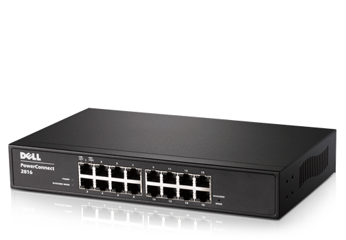

Nella tecnologia delle reti informatiche, uno switch (inglese commutatore) è un dispositivo di rete o nodo interno di rete che si occupa di commutazione a livello datalink del modello ISO/OSI cioè di indirizzamento e instradamento all'interno di reti locali attraverso indirizzi MAC, inoltrando selettivamente i frame ricevuti verso un preciso destinatario grazie a una corrispondenza univoca porta-indirizzo.
Si differenzia dal router che instrada invece a livello 3 (internetworking) interconnettendo più reti locali attraverso il protocollo IP e dall'hub che invece è solamente un ripetitore multiporta di strato fisico ovvero diffusivo senza indirizzamento, mentre il suo comportamento è analogo a quello del bridge. Lo switch attraverso l'instradamento è in grado di ridurre quindi il cosiddetto dominio di collisione presente nelle reti locali broadcast in maniera più efficiente rispetto al bridge.